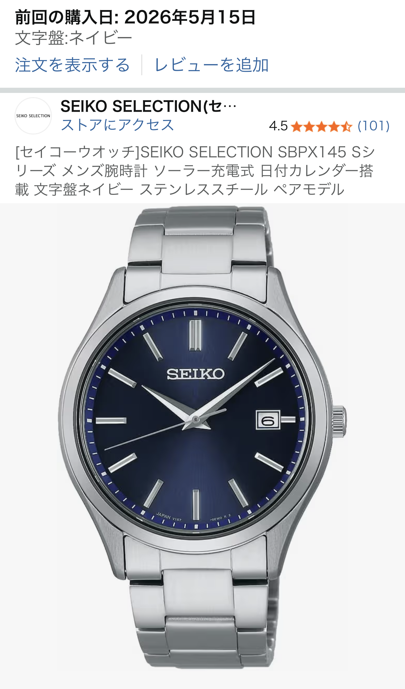

セイコーのドーフィン針ドレスウォッチを口コミからレビュー【上品さと視認性を両立】

「多方面で指摘されている通り、ドーフィン針が上品で高級感があります」「針が長く、細さや形状のおかげで視認性も良い」「サファイアガラスとステンレスケースで耐久性も安心」── こうした口コミが集まっているセイコーのドーフィン針ドレスウォッチは、“価格以上にきちんと見える一本”を探している人にかなり有力な候補です。
本記事では、この口コミ内容と一般的な腕時計の知識をもとに、 ドーフィン針の上品さ・視認性・耐久性、そして同価格帯の他社モデルと比べたときの優位性まで、 購入前にチェックしておきたいポイントをまとめてレビューします。
ドーフィン針が生む「上品さ」と「高級感」
ドーフィン針は、根元から先端に向かってシャープに伸びる三角形のような形状が特徴で、 ドレスウォッチの定番デザインとして多くのブランドで採用されています。 セイコーのこのモデルでも、針のエッジがきれいに立っており、光の当たり方によって表情が変わるため、 価格帯以上の高級感を演出してくれます。
口コミでも「ドーフィン針が上品」「似た価格帯の中では針の出来が頭一つ抜けている」といった声が多く、 実際にスーツスタイルやジャケットスタイルと合わせると、 手元だけワンランク上の時計をしているように見えるのが大きな魅力です。
また、針の長さがしっかりとインデックスまで届いているため、 ぱっと見で時刻が読み取りやすいのもポイント。 デザイン性と実用性を両立している点は、さすがセイコーといった印象です。
細く長い針でも視認性が高い理由
「細い針＝見づらい」というイメージを持つ人もいますが、 このドーフィン針は口コミどおり視認性が良好です。 その理由は、単に細いだけでなく、面の取り方と長さのバランスがしっかり計算されているからです。
- 文字盤の外周近くまで届く長さで、時刻の位置が直感的に分かる
- 針の面が光を拾うため、暗めの室内でも輪郭が認識しやすい
- インデックスとのコントラストがはっきりしていて、目が迷わない
実用面で見ると、ビジネスシーンで会議中にさっと時間を確認したいときや、 電車の乗り換えで急いでいるときでもストレスなく読み取れるレベルです。 「デザイン重視で視認性が犠牲になっている時計」は意外と多いのですが、 このモデルはその逆で、視認性を保ったうえで上品さを足している印象です。
サファイアガラス×ステンレスケースで日常使いに強い
口コミでも触れられている通り、風防にはサファイアガラス、ケースにはステンレスが採用されています。 この組み合わせは、日常使いの腕時計としてはかなり心強い仕様です。
サファイアガラスは、一般的なミネラルガラスよりも傷に強く、 デスクワーク中に袖口から時計が少し当たった程度ではほとんど傷が付きません。 ステンレスケースも耐食性が高く、汗や雨にさらされるシーンでも安心して使えます。
同価格帯の時計だと、ガラスがミネラルだったり、メッキ仕上げのケースだったりすることも多く、 長く使うほど差が出やすい部分です。 「数年単位できれいな状態を保ちたい」「オンオフ問わず毎日使いたい」という人にとって、 この耐久性は大きなメリットになります。
同価格帯の他社モデルと比べたときの優位性
口コミにもあるように、同じ価格帯のドレスウォッチと比べたとき、 特に優位だと感じるのは次のポイントです。
- 針の仕上げが丁寧で、安っぽさが出にくい
- 針の長さ・形状が視認性とデザイン性のバランスに優れている
- サファイアガラス採用で、長期使用を前提にしやすい
- セイコーブランドの安心感があり、ビジネスシーンでも堂々と使える
特に「針の出来栄え」は写真では伝わりにくい部分ですが、 実物を見ると、エッジの立ち方や光の反射の仕方に差が出ます。 ここにコストをかけているモデルは、手元を見たときの満足度が高く、 毎日つけるたびに「買ってよかった」と感じやすいポイントです。
どんな人におすすめ？注意したいポイント
このセイコーのドーフィン針ドレスウォッチは、次のような人に特におすすめです。
- スーツやジャケットスタイルに合う、上品な一本を探している人
- 視認性の良さも妥協したくない人
- 長く使えるベーシックなデザインが欲しい人
- 初めての“ちゃんとした腕時計”として失敗したくない人
一方で、注意点を挙げるとすれば、スポーツウォッチのようなタフさや多機能さを求める人には向きません。 ベゼルが回転したり、クロノグラフが付いていたりするタイプではなく、 あくまで「シンプルで上品なドレスウォッチ」です。
とはいえ、その分デザインが時代に左右されにくく、 数年後に見ても古さを感じにくいのは大きなメリット。 1本目のドレスウォッチとしても、既にスポーツモデルを持っていて 「オン用にもう1本欲しい」という人の2本目としても、バランスの良い選択肢と言えます。
まとめ：価格以上に“きちんと見える”ドレスウォッチを狙うなら有力候補
口コミで高く評価されている通り、このセイコーのドーフィン針ドレスウォッチは、 上品さ・視認性・耐久性のバランスが非常に良いモデルです。
- ドーフィン針が手元に高級感をプラス
- 細く長い針でも視認性が高く、実用性も十分
- サファイアガラス×ステンレスで日常使いに強い
- 同価格帯と比べても、針の仕上げと上品さが優位
「そこまで高額ではないけれど、安っぽく見えない時計が欲しい」 「ビジネスでもプライベートでも使える1本を探している」という人にとって、 かなり“刺さる”選択肢になるはずです。
実物の針の表情やケースの質感は、写真だけでは分かりにくい部分も多いので、 気になった方は早めにチェックしておくのがおすすめです。
※本記事のリンクにはAmazonアフィリエイトリンクが含まれます。
セイコーのドーフィン針ドレスウォッチをAmazonでチェックする